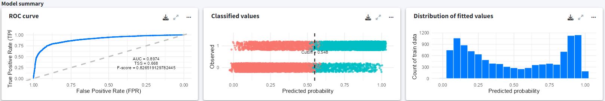
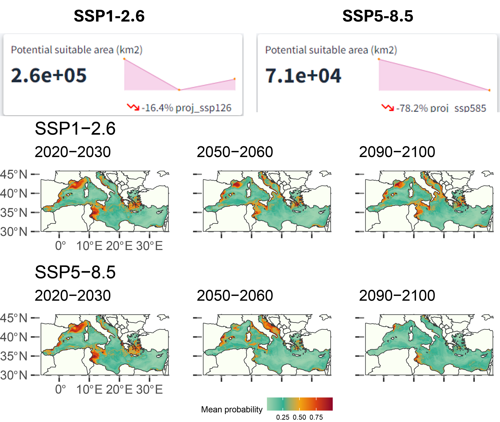

library(glossa)
library(terra)
library(sf)
library(rgbif)
library(biooracler)
library(dplyr)Example 2
Distribution of the Loggerhead Sea Turtle in the Mediterranean Sea
This vignette provides a detailed example of fitting a single-species distribution model within a user-defined region.
Introduction
This vignette provides a detailed example of fitting a single-species distribution model within a user-defined region. We will walk through the steps of obtaining occurrence data, gathering environmental data, and defining the study area using a polygon. The example focuses on the distribution of the loggerhead sea turtle (Caretta caretta) in the Mediterranean Sea. Occurrence data will be retrieved from GBIF for the years 2000 to 2019, and environmental data from Bio-ORACLE v3.0 (Assis et al., 2024). We will use GLOSSA to fit a species distribution model and project it under different future climate scenarios.
To get started, we load the glossa package, as well as terra (Hijmans, 2024) and sf (Pebesma, 2018) to work with spatial rasters and vector data. We also load rgbif (Chamberlain, 2017) and biooracler (Fernandez Bejarano and Salazar, 2024) for downloading species occurrences and environmental data, respectively. Additionally, the dplyr (Wickham et al., 2023) package will be used for data manipulation.
Data preparation
Download occurrence data
We will download occurrence data for Caretta caretta in the Mediterranean Sea using the GBIF API. The data will be filtered by date and geographic boundaries to fit the Mediterranean region and align with the temporal scale of the environmental data from Bio-ORACLE. To use the GBIF API, you need to have a registered account (user, pwd, and email). First, we retrieve the taxon key for C. caretta, and then use occ_download() from the rgbif package to download the occurrences. To restrict the download to the Mediterranean Sea, we use the pred_within() argument and define a polygon of interest ("POLYGON ((-10 28, 38 28, 38 51, -10 51, -10 28))"). Since Bio-ORACLE provides environmental layers in decadal steps, we limit the occurrence data to points between 2000 and 2019.
# Function to retrieve taxon key from scientific name
get_taxon_key <- function(name) {
result <- rgbif::occ_search(scientificName = name, hasCoordinate = TRUE)
if (!is.null(result$data)) {
return(as.character(result$data$taxonKey[1]))
} else {
warning(paste("No taxon key found for", name))
return(NA)
}
}
# Define GBIF credentials and species information
user <- "<gbif username>"
pwd <- "<password>"
email <- "<gbif mail>"
taxon_key <- get_taxon_key("Caretta caretta")
# Download GBIF occurrence data
request_id <- as.character(rgbif::occ_download(
rgbif::pred("taxonKey", taxon_key),
rgbif::pred("hasCoordinate", TRUE),
rgbif::pred_within("POLYGON ((-10 28, 38 28, 38 51, -10 51, -10 28))"),
rgbif::pred("occurrenceStatus", "PRESENT"),
rgbif::pred_gte("YEAR", 2000),
rgbif::pred_lte("YEAR", 2019),
format = "SIMPLE_CSV",
user = user,
pwd = pwd,
email = email
))
response <- rgbif::occ_download_wait(request_id)
if (response$status == "SUCCEEDED"){
temp <- tempfile(fileext = ".csv")
download.file(response$downloadLink, temp, mode = "wb")
caretta <- read.csv(unz(temp, paste0(response$key, ".csv")),
header = TRUE, sep = "\t", dec = ".")
}Once we have the dataset, we prepare it to fit the GLOSSA format. For this, we extract the required record locations (decimalLongitude and decimalLatitude) and assign a timestamp for each record. As Bio-ORACLE provides environmental layers for two decades (2000s and 2010s), we assign points from 2000 to 2009 to the first time period and points from 2010 to 2019 to the second time period. We then create a presence/absence column (pa), setting all downloaded records as presences. Finally, we save the file as a tab-separated CSV and retrieve the DOI of the downloaded data from GBIF (GBIF.org, 2024).
# Prepare the data for modeling
# Separate timestamp in two decades to fit Bio-ORACLE format (2000s and 2010s)
caretta <- data.frame(
decimalLongitude = caretta$decimalLongitude,
decimalLatitude = caretta$decimalLatitude,
timestamp = ifelse(caretta$year %in% 2000:2009, 1, 2),
pa = 1
)
caretta <- caretta[complete.cases(caretta),]
# Save the data
dir.create("data")
write.table(caretta, file = "data/Caretta_caretta_occ.csv", sep = "\t",
dec = ".", quote = FALSE, row.names = FALSE)
# Get citation for the downloaded data
citation <- rgbif::gbif_citation(request_id)$download
citation
# GBIF Occurrence Download https://doi.org/10.15468/dl.es7562
# Accessed from R via rgbif (https://github.com/ropensci/rgbif) on 2024-08-27Download environmental data
Bio-ORACLE provides environmental layers at a spatial resolution of 0.05 degrees and in decadal steps. We will download environmental variables such as ocean surface temperature (thetao in \(^{\circ}\)C), primary productivity (phyc in \(\text{mmol} \cdot \text{m}^{-3}\)), and salinity (so). Bathymetry (bat) will be obtained from the ETOPO 2022 Global Relief Model by NOAA (https://www.ncei.noaa.gov/products/etopo-global-relief-model).
# Define temporal and spatial constraints
time = c("2000-01-01T00:00:00Z", "2010-01-01T00:00:00Z")
latitude = c(28, 51)
longitude = c(-10, 38)
constraints = list(time, longitude, latitude)
names(constraints) = c("time", "longitude", "latitude")
# Download environmental layers from Bio-Oracle
thetao_hist <- download_layers("thetao_baseline_2000_2019_depthsurf",
"thetao_mean", constraints)
phyc_hist <- download_layers("phyc_baseline_2000_2020_depthsurf",
"phyc_mean", constraints)
so_hist <- download_layers("so_baseline_2000_2019_depthsurf",
"so_mean", constraints)
# Download bathymetry data
download.file("https://www.ngdc.noaa.gov/thredds/fileServer/global/ETOPO2022/60s/60s_bed_elev_netcdf/ETOPO_2022_v1_60s_N90W180_bed.nc",
destfile = "data/ETOPO_2022_v1_60s_N90W180_bed.nc")We will prepare the downloaded environmental data and save it in the directory structure required by GLOSSA.
dir.create("data/fit_layers")
# Prepare environmental variables for modeling
env_var <- list(thetao_hist, so_hist, phyc_hist)
names(env_var) <- c("thetao", "so", "phyc")
for (i in seq_along(env_var)) {
var_dir <- paste0("data/fit_layers/", names(env_var)[i])
dir.create(var_dir)
terra::writeRaster(
env_var[[i]][[1]],
filename = paste0(var_dir, "/", names(env_var)[i], "_1.tif")
)
terra::writeRaster(
env_var[[i]][[2]],
filename = paste0(var_dir, "/", names(env_var)[i], "_2.tif")
)
# Clean up auxiliary files generated by terra - Optional
aux_files <- list.files(var_dir, pattern = "\\.aux\\.json$", full.names = TRUE)
file.remove(aux_files)
}
# Prepare bathymetry data
bat <- terra::rast("data/ETOPO_2022_v1_60s_N90W180_bed.nc")
bat <- -1*bat # Change sign from elvation to bathymetry
# Aggregate to match resolution with Bio-ORACLE layers
bat <- terra::aggregate(bat, fact = 3, fun = "mean")
r <- terra::rast(terra::ext(env_var[[1]]), res = terra::res(env_var[[1]]))
bat <- terra::resample(bat, r)
dir.create("data/fit_layers/bat")
for (i in 1:2){
terra::writeRaster(bat, filename = paste0("data/fit_layers/bat/bat_", i, ".tif"))
}
# Zip all prepared layers
zip(zipfile = "data/fit_layers.zip", files = "data/fit_layers")Climate projections: SSP1 2.6 and SSP5 8.5
We will now download climate projections for SSP1 2.6 (sustainable development scenario where global CO2 emissions are strongly reduced but less rapidly) and SSP5 8.5 (a high emissions scenario) scenarios, and prepare the data for model projection.
SSP1 2.6
# SSP1 2.6 projections constraints
time = c("2020-01-01T00:00:00Z", "2090-01-01T00:00:00Z")
latitude = c(28, 51)
longitude = c(-10, 38)
constraints = list(time, longitude, latitude)
names(constraints) = c("time", "longitude", "latitude")
env_var_ssp126 <- list(
thetao_ssp126 = download_layers("thetao_ssp126_2020_2100_depthsurf",
"thetao_mean", constraints),
so_ssp126 = download_layers("so_ssp126_2020_2100_depthsurf",
"so_mean", constraints),
phyc_ssp126 = download_layers("phyc_ssp126_2020_2100_depthsurf",
"phyc_mean", constraints)
)
names(env_var_ssp126) <- c("thetao", "so", "phyc")
dir.create("data/proj_ssp126")
for (i in seq_along(env_var_ssp126)) {
var_dir <- paste0("data/proj_ssp126/", names(env_var_ssp126)[i])
dir.create(var_dir, showWarnings = FALSE)
terra::writeRaster(
env_var_ssp126[[i]][[1]],
filename = paste0(var_dir, "/", names(env_var_ssp126)[i], "_1.tif")
)
terra::writeRaster(
env_var_ssp126[[i]][[4]],
filename = paste0(var_dir, "/", names(env_var_ssp126)[i], "_2.tif")
)
terra::writeRaster(
env_var_ssp126[[i]][[8]],
filename = paste0(var_dir, "/", names(env_var_ssp126)[i], "_3.tif")
)
# Clean up auxiliary files
aux_files <- list.files(var_dir, pattern = "\\.aux\\.json$", full.names = TRUE)
file.remove(aux_files)
}
# Prepare bathymetry data for SSP1 2.6
dir.create("data/proj_ssp126/bat", showWarnings = FALSE)
for (i in 1:3) {
terra::writeRaster(bat, filename = paste0("data/proj_ssp126/bat/bat_", i, ".tif"))
}
# Zip the data
zip(zipfile = "data/proj_ssp126.zip", files = "data/proj_ssp126")SSP5 8.5
# SSP5 8.5 projections constraints
time = c("2020-01-01T00:00:00Z", "2090-01-01T00:00:00Z")
latitude = c(28, 51)
longitude = c(-10, 38)
constraints = list(time, longitude, latitude)
names(constraints) = c("time", "longitude", "latitude")
env_var_ssp585 <- list(
thetao_ssp585 = download_layers("thetao_ssp585_2020_2100_depthsurf",
"thetao_mean", constraints),
so_ssp585 = download_layers("so_ssp585_2020_2100_depthsurf",
"so_mean", constraints),
phyc_ssp585 = download_layers("phyc_ssp585_2020_2100_depthsurf",
"phyc_mean", constraints)
)
names(env_var_ssp585) <- c("thetao", "so", "phyc")
dir.create("data/proj_ssp585")
for (i in seq_along(env_var_ssp585)) {
var_dir <- paste0("data/proj_ssp585/", names(env_var_ssp585)[i])
dir.create(var_dir, showWarnings = FALSE)
terra::writeRaster(
env_var_ssp585[[i]][[1]],
filename = paste0(var_dir, "/", names(env_var_ssp585)[i], "_1.tif")
)
terra::writeRaster(
env_var_ssp585[[i]][[4]],
filename = paste0(var_dir, "/", names(env_var_ssp585)[i], "_2.tif")
)
terra::writeRaster(
env_var_ssp585[[i]][[8]],
filename = paste0(var_dir, "/", names(env_var_ssp585)[i], "_3.tif")
)
# Clean up auxiliary files
aux_files <- list.files(var_dir, pattern = "\\.aux\\.json$", full.names = TRUE)
file.remove(aux_files)
}
# Prepare bathymetry data for SSP5 8.5
dir.create("data/proj_ssp585/bat", showWarnings = FALSE)
for (i in 1:3) {
terra::writeRaster(bat, filename = paste0("data/proj_ssp585/bat/bat_", i, ".tif"))
}
# Zip the data
zip(zipfile = "data/proj_ssp585.zip", files = "data/proj_ssp585")Study area polygon
To define the study area, we downloaded a polygon representing the Mediterranean Sea, which restricts the analysis to this region as the environmental layers extend beyond it. The shapefile was obtained from the Marine Regions repository. The specific download link for the Mediterranean Sea polygon can be found here.
tmpdir <- tempdir()
zip_contents <- utils::unzip("data/iho.zip", unzip = getOption("unzip"), exdir = tmpdir)
med_sea <- list.files(tmpdir, pattern = "\\.shp$", full.names = TRUE) %>%
sf::st_read() %>%
sf::st_geometry() %>%
sf::st_union() %>%
sf::st_make_valid()
med_sea <- sf::st_geometry(med_sea[[2]]) %>%
sf::st_make_valid()
sf::st_crs(med_sea) <- "epsg:4326"
sf::st_write(med_sea, "data/mediterranean_sea.gpkg")GLOSSA modeling
With the data prepared and formatted for the GLOSSA framework, we use the glossa::run_glossa() function to launch the GLOSSA Shiny app for species distribution modeling and projection under different climate scenarios.
run_glossa()Upload the occurrence file for C. caretta and the environmental layers for model fitting and projection scenarios. For habitat suitability analysis, select the Model fitting and Model projection options from the Suitable habitat model. Enable Variable importance in the Others section to check the decrease of the F-score.
In the advanced options, set the following parameters: thinning precision to 2, standardize environmental data, and enlarge the polygon by 0.01 degrees to account for the lower resolution of the polygon and ensure the boundaries match properly -previously, many points near the coast were lost due to an insufficient buffer size-. Select the BART (Chipman, et al., 2010; Dorie, 2024) model and set the seed to 5648 for reproducibility.
Results
Once the analysis is completed, we observe occurrence records that were excluded due to being outside the study area or too close to other points (orange points in Figure 3), as we applied a thinning precision of 2. We are left with 5572 presence points and an equal number of pseudo-absences.
The model summary indicates a decent predictive capacity with an AUC of 0.9 and an F-score of 0.8 The distribution of fitted values can also be explored. Note that the model was fitted using randomly generated pseudo-absences rather than real absences.

We can also determine which predictors play a more significant role in predicting the outcome by examining the variable importance plot. This plot shows the decrease in model F-score using permutation feature importance, which measures the increase in prediction error after shuffling the predictor values. We see that the most important variable is the sea surface temperature followed by the bathymetry. Sea turtles live their entire lives in the ocean, but they migrate to nest on coastal land, with their sex being determined by the temperature during incubation (Mancino et al., 2022).
For the climate projections, there is a predicted decrease of 16.4% in suitable habitat area (\(\text{km}^2\)) in the SSP1-2.6 scenario and about 78.2% in the SSP5-8.5 scenario from the 2020s to the 2090s. The western Mediterranean and the Adriatic Sea are projected to have relatively better habitat suitability.

Conclusion
This example shows how GLOSSA can be used to model the distribution of Caretta caretta in the Mediterranean Sea. The steps included downloading occurrence data from GBIF, obtaining environmental layers from Bio-ORACLE, and preparing the data for model fitting and projections under various climate change scenarios.
Computation time
The analysis was performed on a single Windows 11 machine equipped with 64 GB of RAM and an Intel(R) Core(TM) i7-1165G7 processor. This processor features 4 cores and 8 threads, with a base clock speed of 2.80 GHz. The following table summarizes the computation times for various stages of the GLOSSA analysis. This provides an overview of the computational resources required for each step in the analysis.
Table 1. Computation times for different stages of the GLOSSA analysis for the loggerhead sea turtle (Caretta caretta) in the Mediterranean Sea.
| Task | Execution Time |
|---|---|
| Loading input data | 33.65 secs |
| Processing P/A coordinates | 0.21 secs |
| Processing covariate layers | 9.80 secs |
| Building model matrix | 12.01 secs |
| Fitting native range models | 0.232 mins |
| Variable importance (native range) | 8.31 mins |
| P/A cutoff (native range) | 0.191 mins |
| Projections on fit layers (native range) | 9.84 mins |
| Native range projections | 9.47 mins |
| Native range | 19.74 mins |
| Fitting suitable habitat models | 0.232 mins |
| Variable importance (suitable habitat) | 8.31 mins |
| P/A cutoff (suitable habitat) | 0.191 mins |
| Projections on fit layers (suitable habitat) | 9.84 mins |
| Suitable habitat projections | 9.47 mins |
| Habitat suitability | 0.006 mins |
| Suitable habitat | 19.74 mins |
| Computing functional responses | 13.35 mins |
| Cross-validation | 4.19 mins |
| Model summary | 0.18 mins |
| Total GLOSSA analysis | 38.39 mins |
References
Assis, J., Fernndez Bejarano, S. J., Salazar, V. W., Schepers, L., Gouvea, L., Fragkopoulou, E., & De Clerck, O. (2024). BioORACLE v3. 0. Pushing marine data layers to the CMIP6 Earth System Models of climate change research. Global Ecology and Biogeography, 33(4), e13813.
Chamberlain, S. (2017). rgbif: Interface to the Global Biodiversity Information Facility API. R package version 0.9.8. https://CRAN.R-project.org/package=rgbif
Chipman, H. A., George, E. I., & McCulloch, R. E. (2010). BART: Bayesian additive regression trees.
Dorie V (2024). dbarts: Discrete Bayesian Additive Regression Trees Sampler. R package version 0.9-28, https://CRAN.R-project.org/package=dbarts.
Fernandez-Bejarano, S. J. & Salazar, V. W. (2024). biooraclee: R package to access Bio-Oracle data via ERDDAP. R package version 0.0.0.9, https://github.com/bio-oracle/biooracler
GBIF.org (26 August 2024) GBIF Occurrence Download https://doi.org/10.15468/dl.es7562
Hijmans, R. (2024). terra: Spatial Data Analysis. R package version 1.7-81, https://rspatial.github.io/terra/, https://rspatial.org/.
Mancino, C., Canestrelli, D., & Maiorano, L. (2022). Going west: Range expansion for loggerhead sea turtles in the Mediterranean Sea under climate change. Global Ecology and Conservation, 38, e02264.
Pebesma E (2018). Simple Features for R: Standardized Support for Spatial Vector Data. The R Journal, 10(1), 439446. doi:10.32614/RJ-2018-009.
Wickham H, Franois R, Henry L, Mller K & Vaughan D (2023). dplyr: A Grammar of Data Manipulation. R package version 1.1.4, https://github.com/tidyverse/dplyr, https://dplyr.tidyverse.org.